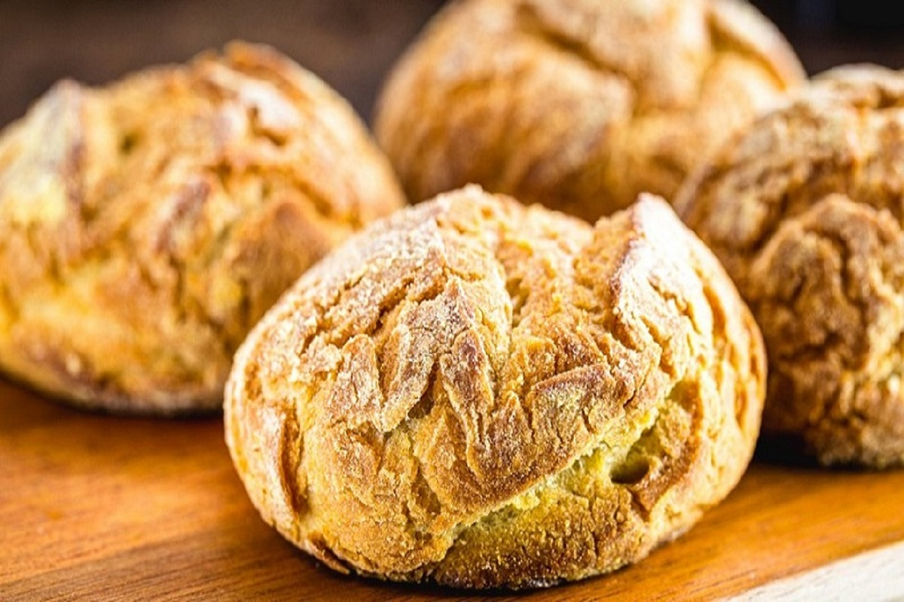

Receita de Broinha de Fubá
 Rendimento:
10 unidades
Rendimento:
10 unidades
Tempo de preparo: 45 minutos
Ingredientes:
- 500 g de fubá
- 500 g de farinha de trigo
- 500 g de açúcar
- 3 ovos
- 1 copo de leite
- 200 g de margarina
- 1 colher de sopa bem cheia de fermento em pó
- 1 colher de sopa de erva doce (opcional)
Modo de Preparo:
- Misture numa bacia os ovos (separe duas gemas), a margarina e o açúcar (misture bem).
- Vá colocando a farinha e o fubá até virar uma farofa grosseira.
- Despeje o leite misturado com o fermento e amasse bem, até virar um angu grosso.
- Caso goste, coloque a erva doce.
- Vá separando bolinhas da massa e arrumando num tabuleiro untado, deixando espaço entre elas (pois crescem no forno).
- Misture aquelas duas gemas que separou com um pouquinho de café ou se gostar troque o café por canela em pó e passe com um pincel ou até mesmo com os dedos sobre as broinhas.
- Faça cortes em cima para enfeitar, se não quiser pode deixar sem cortar mesmo.
- Leve ao forno médio por 25 a 30 minutos dependendo do forno.